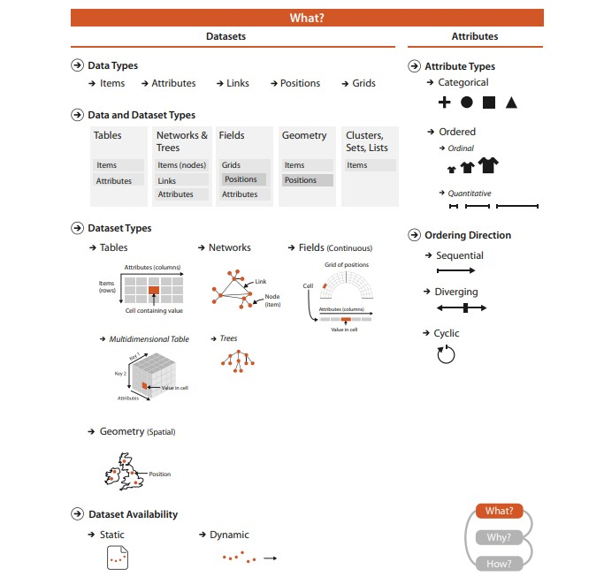
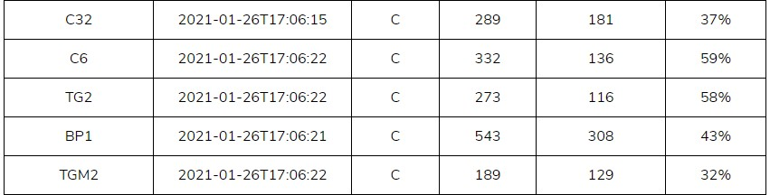
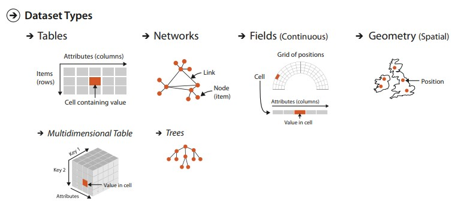
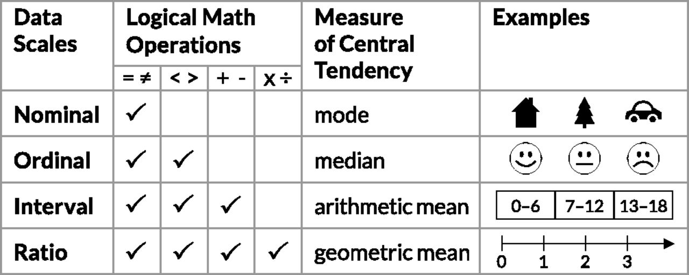

2a: All about data
What is the data like?
What: An overview
Visualization Analysis and Design, chapter 2, Munzner
Why do data semantics and types matter?
What is this?
Better?

Of course it matters. Would you understand what the data is like if you had to guess at what each column is like?
Properly describing and documenting data in metadata allows users to understand what the data is.
Not only expected value types, but expected range, whether a field is a derived value or not, etc.
Data Types
Items
- An item is an individual discrete entity
- E.g. row in a table, node in a network, a polygon area on a map
Attributes
- An attribute is some specific property that can be measured, observed, or logged
- aka variable, dimension, metric
What is an item? What is an attribute?

What is this data?
Better?

Data Types 2
Nodes
- Synonym for item but in the context of networks (graphs)
Links
- A link is a relation between two items
- E.g. social network, computer network
Higher order data types are often compositions of more basic data types
Data Types 3
Position / Regions
- A position is a location in space (typically 2D or 3D)
- May be subject to projections
- E.g. a district on a map, a 3D architectural diagram
Fields / Grids
- A grid specifies how data is sampled geometrically / topologically
- Necessary for sampling continuous data
- E.g. Earth map tiling, CT map scans
Geographic positions / grids
Data Types 4
Clusters / Sets / Lists
- A set is simply an unordered group of items.
- A list is a group of items with a specified ordering.
- A cluster is a grouping based on attribute similarity, where items within a cluster are more similar to each other than to ones in another cluster.
Data types → dataset types
Data Availability
Static or dynamic?
Data Hierarchies
More on hierarchies in D3
Hierarchical datasets lend themselves very well to visualizations like dendograms, trees, treemaps, packed circles.
We'll talk more about specific visualization idioms in a later lecture.
Data scales
Levels of measurement (or scale of measure, or data scales), a proposed typology by psychologist Stanley Smith Stevens(1906-1973). Still widely used framework, esp. now in data science.
More reading: Levels of measurement: Nominal, ordinal, interval, ratio, Scribbr, Prita Bandari
Why are data scales important?
Because they highly influence the type of encodings and visualizations possible.
It roughly maps to the qualitative (nominal / categorical) — ordinal — quantitative scale by French cartographer Jacques Bertin (1918-2010).
Qualitative data: represented by groupings
Quantitative data: represented by amounts
Nominal data
Or categorical data. Data is qualitative.
- Categories can only distinguish whether two things are the same (apples) or different (apples versus oranges).
- Often no implicit ordering, but is part of a hierarchical structure.
- Of course, any arbitrary external ordering can be imposed upon categorical data - e.g. alphabetically - but only if this auxillary information is available. It is not intrinsic to the data.
- Examples: City names, file types, music genres.
Ordinal data
- Data where there is often an implicit ordering in the structure.
- Examples: T-shirt sizes, rankings of university, etc.
- Note: You cannot do arthimetic on these because it has no meaning. E.g. What is the difference between rank 5 and rank 4? Is it the same as between rank 2 and 1? (nope).
Ordinal data can have a qualitative or quantitative quality.
Quantitative data
Typically interval or ratio data.
- Data where arthimetic has meaning.
- For example where you can say one month you sold 50 units, and the next 100, so you doubled your sales.
- Examples: amount of inventory, temperature, length, weight, etc.
There are more specific distinctions between interval and ratio, but it does not really affect visualization principles as much.
Ordering: Sequential, diverging, cyclic

Like qualitative data variables, qualitative graphic variables (e.g., shape or color hue) have no intrinsic ordering.
In contrast, quantitative graphic variables (e.g., size or color intensity) can have different ordering directions, such as sequential, diverging, or cyclic
For the qualitative data, color is used as an identity channel. For quantitative, it is often a magnitude channel. We'll discuss color more in later lectures.
So what scale of measure is each attribute?
More reading: Is time nominal, ordinal, interval or ratio? Is it categorical or continuous? Peter Flom, Statistical Analysis Consulting
A more detaild example

Elections SG2020

Electoral Divisions
Questions?
Chi-Loong | V/R